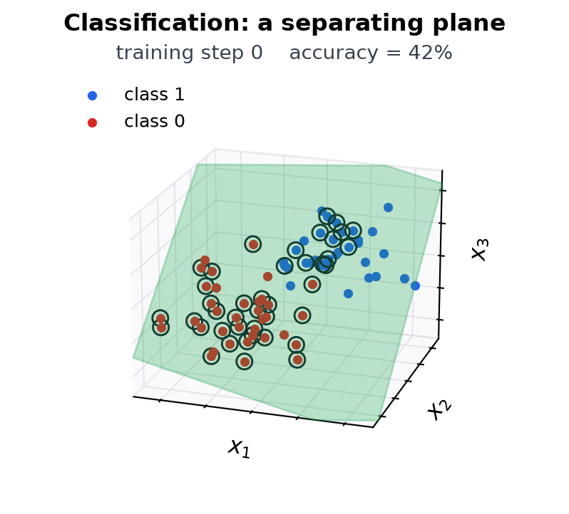
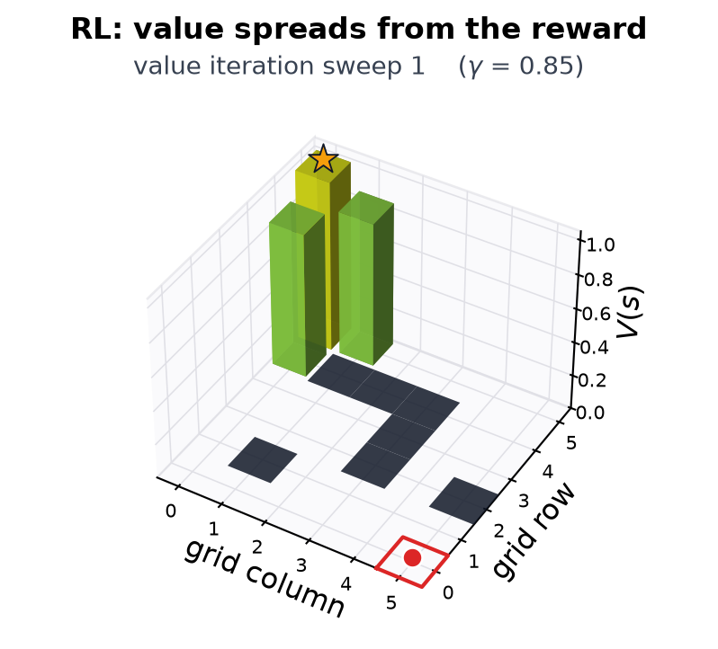
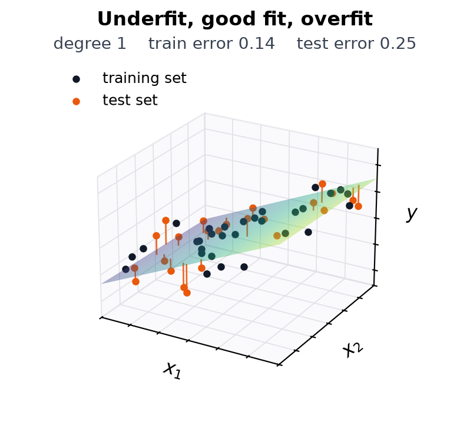
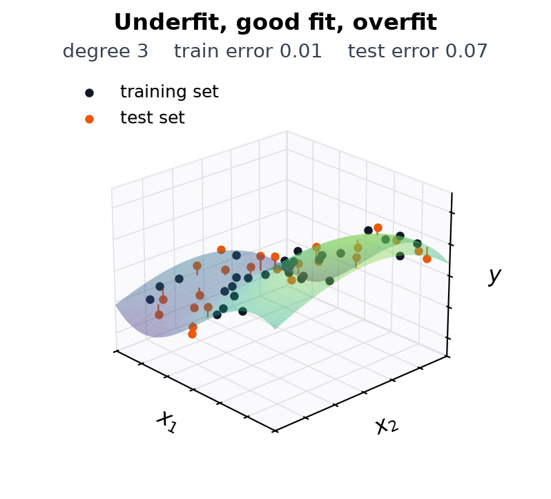

Introduction और Basic Concepts
Theory
इस lecture में: Machine Learning क्या है (Arthur Samuel और Tom Mitchell की definitions), इसके तीन बड़े परिवार (Supervised Learning, Unsupervised Learning, Reinforcement Learning), वह शब्दावली जो पूरी किताब में चलेगी (feature, label, training set, hypothesis, parameters, cost function, generalization, overfitting, train/test split), एक ML project का आम workflow, और आगे के lectures का roadmap।
1. एक line में idea
आम programming में हम computer को नियम खुद लिखकर देते हैं: "अगर email में ये शब्द हों, तो उसे spam मानो।" Machine Learning में हम नियम नहीं लिखते। हम computer को बहुत सारे उदाहरण (data) देते हैं, और एक ऐसा algorithm देते हैं जो उन उदाहरणों से नियम खुद निकाल लेता है।
| हम क्या देते हैं | computer क्या लौटाता है | |
|---|---|---|
| आम programming | data + नियम (program) | जवाब |
| Machine Learning | data + सही जवाब (उदाहरण) | नियम (model) |
यह तरीका तब काम आता है जब नियम हाथ से लिखना बहुत मुश्किल हो (चेहरा पहचानना, आवाज़ समझना, गाड़ी चलाना), पर उदाहरण इकट्ठा करना आसान हो।
2. Machine Learning की दो definitions
Arthur Samuel (1959): Machine Learning वह field of study है जो computers को यह क्षमता देता है कि वे बिना explicitly program किए सीख सकें।
Samuel ने checkers खेलने वाला program बनाया था। Program ने खुद के खिलाफ़ हज़ारों games खेले, और धीरे-धीरे पहचानना सीख लिया कि board की कौन सी स्थितियाँ जीत की ओर ले जाती हैं। अंत में वह Samuel से बेहतर खेलने लगा, जबकि Samuel ने उसे कोई चाल नहीं सिखाई थी।
Tom Mitchell (1997): एक computer program किसी task \(T\) और performance measure \(P\) के लिए experience \(E\) से सीखता है, अगर \(T\) पर उसका performance, \(P\) से नापने पर, \(E\) के साथ बेहतर होता जाए।
यह definition ज़्यादा काम की है, क्योंकि यह हमें तीन सवाल पूछने पर मजबूर करती है: काम क्या है, अच्छा या बुरा कैसे नापेंगे, और सीखने के लिए data क्या है।
| Problem | Task \(T\) | Performance \(P\) | Experience \(E\) |
|---|---|---|---|
| Checkers | checkers खेलना | जीते हुए games का हिस्सा | खुद के खिलाफ़ खेले गए games |
| Spam filter | हर email को spam / not spam बताना | नए emails में से कितने % सही पहचाने गए | वे emails जिन पर user ने खुद spam / not spam का निशान लगाया |
| घर की कीमत | घर की कीमत का अंदाज़ा लगाना | नए घरों पर औसत squared error (जितना कम, उतना अच्छा) | पहले बिक चुके घरों का data |
Worked example (spam filter): मान लीजिए 100 labelled emails देखने के बाद program नए emails में से 80% सही पहचानता है, और 10,000 emails देखने के बाद 97%। \(E\) बढ़ा, तो \(T\) पर \(P\) बेहतर हुआ। Mitchell की definition के हिसाब से program ने सीखा है। अगर accuracy 80% पर ही अटकी रहती, तो program सिर्फ़ data जमा कर रहा होता, सीख नहीं रहा होता। ध्यान दें कि \(P\) हमेशा नए emails पर नापा जाता है, उन पर नहीं जिन्हें program पहले देख चुका है।
3. शब्दावली और Notation
पूरी किताब में एक ही उदाहरण याद रखें: घर के size और bedrooms से उसकी कीमत का अंदाज़ा लगाना।
| शब्द | Symbol | मतलब | घर वाले उदाहरण में |
|---|---|---|---|
| feature | \(x_j\) | input का एक नापा हुआ गुण | size, bedrooms की संख्या |
| input (feature vector) | \(x \in \mathcal{X}\) | एक उदाहरण के सारे features | \(x = (2000, 3)\) |
| label / target | \(y \in \mathcal{Y}\) | वह सही जवाब जो हमें predict करना है | कीमत |
| training example | \((x^{(i)}, y^{(i)})\) | input और उसके सही जवाब का एक जोड़ा | एक बिका हुआ घर |
| training set | \(\{(x^{(i)}, y^{(i)});\ i = 1, \dots, m\}\) | सीखने के लिए दिए गए सारे examples | \(m\) घरों की list |
| hypothesis / model | \(h: \mathcal{X} \to \mathcal{Y}\) | वह function जो \(x\) से \(y\) का अंदाज़ा देता है | कीमत का formula |
| parameters | \(\theta\) | model के अंदर की वे संख्याएँ जो data से सीखी जाती हैं | formula के weights |
| cost / loss function | \(J(\theta)\) | एक संख्या जो बताती है कि model कितना गलत है | औसत squared error |
यहाँ \(m\) training examples की संख्या है और \(n\) features की संख्या। \(x^{(i)}\) में ऊपर लिखा \((i)\) सिर्फ़ example का नंबर है, power नहीं। \(\mathcal{X}\) सारे संभव inputs का set है और \(\mathcal{Y}\) सारे संभव outputs का।
4. Supervised Learning
Supervised Learning में हर training example के साथ सही जवाब \(y^{(i)}\) दिया होता है, जैसे कोई शिक्षक (supervisor) हर सवाल का हल साथ में दे रहा हो। लक्ष्य है training set से ऐसा \(h\) सीखना कि \(h(x)\), \(y\) का अच्छा अंदाज़ा हो। \(y\) किस तरह का है, इससे दो तरह की problems बनती हैं:
| Regression | Classification | |
|---|---|---|
| \(y\) कैसा है | continuous संख्या, \(y \in \mathbb{R}\) | गिनी-चुनी categories में से एक, जैसे \(y \in \{0, 1\}\) |
| उदाहरण | घर की कीमत, कल का तापमान | spam / not spam, tumor malignant / benign |
| model क्या सीखता है | data के पास से गुज़रने वाली line / surface | classes को अलग करने वाली decision boundary |
| आम loss | squared error \((h(x) - y)^2\) | गलत हुआ या नहीं: \(1\{h(x) \neq y\}\) |
यहाँ \(1\{\cdot\}\) indicator function है: अंदर की बात सच हो तो 1, वरना 0। Classification में दो classes हों तो उसे binary classification कहते हैं, ज़्यादा हों तो multi-class।
5. Cost Function, Training और Prediction
Model कितना गलत है, यह एक संख्या में नापने के लिए हम हर example पर loss \(L\) निकालते हैं और उसका औसत लेते हैं:
\[J(\theta) = \frac{1}{m} \sum_{i=1}^{m} L\left( h_\theta(x^{(i)}),\, y^{(i)} \right)\]
- Training (learning): वह \(\theta\) ढूँढना जो cost को सबसे छोटा कर दे: \(\hat{\theta} = \arg\min_\theta J(\theta)\)। यह काम एक बार होता है और इसमें पूरा training set लगता है।
- Prediction (inference): सीखे हुए \(\hat{\theta}\) को स्थिर रखकर किसी नए \(x\) के लिए \(\hat{y} = h_{\hat{\theta}}(x)\) निकालना। इसमें training set की ज़रूरत नहीं पड़ती।
अलग-अलग lectures में \(J\) के आगे का constant अलग दिखेगा (जैसे Lecture 2 में \(\frac{1}{2}\))। इससे minimum की जगह नहीं बदलती, सिर्फ़ maths साफ़ होता है।
6. Generalization, Underfitting और Overfitting
हमारा असली लक्ष्य training set को याद करना नहीं है। लक्ष्य है कि model उन examples पर अच्छा चले जिन्हें उसने कभी नहीं देखा। इसी क्षमता को generalization कहते हैं। मान लें सारे examples किसी अनजान distribution \(\mathcal{D}\) से आते हैं। तब दो अलग errors हैं:
\[\hat{\varepsilon}_{\text{train}}(h) = \frac{1}{m} \sum_{i=1}^{m} L\left( h(x^{(i)}), y^{(i)} \right), \qquad \varepsilon(h) = \mathbb{E}_{(x, y) \sim \mathcal{D}} \left[ L\left( h(x), y \right) \right]\]
पहला training error है, जिसे हम नाप सकते हैं। दूसरा generalization error है, जो हमें चाहिए, पर जिसे सीधे नहीं नापा जा सकता क्योंकि \(\mathcal{D}\) हमें पता नहीं। इसका अंदाज़ा लगाने के लिए train/test split करते हैं: data को random तरीके से दो हिस्सों में बाँटें (जैसे 70% और 30%), बड़े हिस्से पर train करें, और छोटे हिस्से (test set) को training से पूरी तरह अलग रखकर सिर्फ़ अंत में उस पर error नापें। Test set पर नापा गया error, \(\varepsilon(h)\) का ईमानदार अंदाज़ा है।
| स्थिति | Training error | Test error | कारण | इलाज की दिशा |
|---|---|---|---|---|
| Underfitting | बड़ा | बड़ा | model बहुत सरल है, data का pattern पकड़ ही नहीं पाता | ज़्यादा features, ज़्यादा लचीला model |
| ठीक fit | छोटा | छोटा, training error के पास | model की complexity data के लायक है | कुछ नहीं |
| Overfitting | बहुत छोटा | बड़ा | model इतना लचीला है कि training set का noise भी याद कर लेता है | ज़्यादा data, सरल model, regularization |
Training error और test error के बीच का फ़ासला ही overfitting की पहचान है। Lecture 8 में यही बात bias और variance की भाषा में दोबारा आएगी।
7. Unsupervised Learning
यहाँ data में सिर्फ़ inputs हैं, कोई label नहीं: \(\{x^{(1)}, \dots, x^{(m)}\}\)। कोई "सही जवाब" नहीं है। लक्ष्य data के अंदर छिपा ढाँचा खोजना है। दो मुख्य काम:
- Clustering: मिलते-जुलते examples को झुंडों में बाँटना। जैसे ग्राहकों को उनकी खरीदारी की आदतों से groups में बाँटना। k-means algorithm हर example \(x^{(i)}\) को किसी cluster \(c^{(i)}\) में रखता है और हर cluster का केंद्र (centroid) \(\mu_j\) चुनता है, ताकि यह दूरी छोटी से छोटी हो: \(J(c, \mu) = \sum_{i=1}^{m} \| x^{(i)} - \mu_{c^{(i)}} \|^2\)।
- Dimensionality reduction: \(x \in \mathbb{R}^n\) को एक छोटे vector \(z \in \mathbb{R}^k\) (\(k < n\)) में दबाना, ताकि ज़रूरी जानकारी (ज़्यादातर variance) बची रहे। यह data को 2D या 3D में देखने, noise हटाने और आगे के algorithms को तेज़ करने में काम आता है। PCA इसका सबसे जाना-माना तरीका है।
8. Reinforcement Learning
यहाँ कोई training set पहले से नहीं होता। एक agent किसी environment में कदम-दर-कदम फ़ैसले लेता है। समय \(t\) पर वह state \(s_t\) में है, action \(a_t\) चुनता है, environment उसे नई state \(s_{t+1}\) में पहुँचा देता है, और agent को एक संख्या मिलती है: reward \(R(s_t)\)। Agent को कोई नहीं बताता कि सही action क्या था। उसे बस reward दिखता है, और वह भी अक्सर देर से (शतरंज में जीत या हार का पता आखिरी चाल पर चलता है)। लक्ष्य एक policy \(\pi\) सीखना है, यानी state से action का नियम, जो लंबे समय का कुल discounted reward बड़ा से बड़ा करे:
\[\mathbb{E}\left[ R(s_0) + \gamma R(s_1) + \gamma^2 R(s_2) + \dots \right], \qquad 0 \le \gamma < 1\]
\(\gamma\) discount factor है: जल्दी मिलने वाला reward, देर से मिलने वाले reward से ज़्यादा कीमती गिना जाता है। उदाहरण: robot का चलना सीखना, games खेलना, helicopter उड़ाना।
| Supervised | Unsupervised | Reinforcement | |
|---|---|---|---|
| Data | \((x^{(i)}, y^{(i)})\) के जोड़े | सिर्फ़ \(x^{(i)}\) | agent के अपने अनुभव: states, actions, rewards |
| सीखने का संकेत | हर example का सही जवाब | कोई नहीं | reward, अक्सर देर से |
| लक्ष्य | नए \(x\) के लिए \(y\) predict करना | data का ढाँचा खोजना | अच्छे फ़ैसलों का सिलसिला (policy) सीखना |
9. एक ML project का workflow
- Problem तय करें: \(T\) क्या है, \(P\) क्या है? यह regression है, classification है, या कुछ और?
- Data इकट्ठा करें: यही आपका \(E\) है। Data वैसा ही होना चाहिए जैसा model को असल इस्तेमाल में मिलेगा।
- Data देखें और features बनाएँ: plots बनाएँ, गलत या गायब values ठीक करें, features को scale करें।
- Split करें: training set और test set अलग कर लें, और test set को ताले में रख दें।
- सरल model से शुरू करें: पहले एक baseline (जैसे Linear या Logistic Regression) train करें।
- Train करें: training set पर \(J(\theta)\) minimize करें।
- जाँचें और सुधारें: training error और held-out error की तुलना करें। Underfitting है या overfitting? उसी हिसाब से model, features या data बदलें और दोहराएँ (Lecture 12 इसी पर है)।
- अंतिम परीक्षा और इस्तेमाल: सब तय हो जाने के बाद एक बार test set पर error नापें, फिर model को काम पर लगाएँ और उस पर नज़र रखें।
10. Roadmap: आगे क्या आएगा
| Lectures | विषय | परिवार |
|---|---|---|
| 2 से 4 | Linear models और GLMs: Linear Regression, Logistic Regression, Newton's Method, Perceptron, Exponential Family, Softmax Regression | Supervised |
| 5 से 6 | Generative models (जैसे Gaussian Discriminant Analysis, Naive Bayes) | Supervised |
| 6 से 7 | Support Vector Machines (SVM) और kernels | Supervised |
| 8 | Bias-variance tradeoff और regularization | सीखने का theory |
| 9 | Decision Trees और ensembles | Supervised |
| 10 से 11 | Neural Networks | Supervised |
| 12 | Practical advice: ML project को debug करना और सुधारना | सभी |
| 13 से 15 | Unsupervised Learning (जैसे k-means, EM algorithm, PCA) | Unsupervised |
| 16 से 19 | Reinforcement Learning (जैसे MDPs, value iteration) | Reinforcement |
| 20 | Wrap-up और Convolutional Neural Networks (CNNs) | Supervised |
11. Practical बातें और आम गलतियाँ
- Test set पर train न करें, और उसे देखकर फ़ैसले भी न लें: अगर आप test error देख-देखकर model बदलते रहे, तो test set भी चुपचाप training का हिस्सा बन जाता है और उसका error ज़रूरत से ज़्यादा अच्छा दिखने लगता है। Model चुनने के लिए एक अलग validation set रखें (Lecture 8)।
- Split से पहले shuffle करें: अगर data किसी क्रम में है (जैसे तारीख या class के हिसाब से), तो बिना shuffle किए काटने पर train और test अलग-अलग तरह के हो जाएँगे।
- Training error कम होना काफ़ी नहीं: 100% training accuracy अक्सर overfitting का संकेत है, सफलता का नहीं। हमेशा held-out data पर नापें।
- Accuracy धोखा दे सकती है: अगर 99% emails spam नहीं हैं, तो "कभी spam नहीं" कहने वाला बेकार model भी 99% accurate है। \(P\) सोच-समझकर चुनें।
- पहले सरल model: एक सरल baseline जल्दी बता देता है कि problem कितनी कठिन है और data में कोई गड़बड़ तो नहीं।
- Data की quality, algorithm से ज़्यादा मायने रखती है: गलत labels या असल दुनिया से अलग data पर कोई भी algorithm अच्छा नहीं चलेगा।
12. खुद से पूछें
- एक program मौसम के पुराने records देखकर कल की बारिश की probability बताता है। Mitchell की definition में यहाँ \(T\), \(P\) और \(E\) क्या हैं? यह regression है या classification?
- किसी model का training error 1% है और test error 25%। यह underfitting है या overfitting? आप कौन सी दो चीज़ें आज़माएँगे?
- Supervised Learning और Reinforcement Learning दोनों में सीखने का कोई संकेत मिलता है। फिर reward, label से किस तरह अलग है?
3D Animations


क्या देखें: यह Supervised Learning (regression) है: हर काला बिंदु एक training example है, ज़मीन पर features \(x_1, x_2\) और ऊँचाई पर target \(y\)। रंगीन surface hypothesis \(h_\theta(x)\) है, जो \(\theta = 0\) पर सपाट शुरू होती है। Training के हर step में surface data की ओर मुड़ती है, लाल रेखाएँ (errors) छोटी होती हैं और cost \(J(\theta)\) गिरता है। अंत में एक नया \(x\) (नारंगी) आता है जो training set में नहीं था, और model surface की ऊँचाई पढ़कर उसका prediction दे देता है। Training और prediction का फ़र्क यही है।



क्या देखें: यह Supervised Learning (classification) है: तीनों axes features हैं (\(x_1, x_2, x_3\)) और label रंग से दिखाया गया है (नीला class 1, लाल class 0)। हरा plane model की decision boundary है: उसके एक तरफ़ model "class 1" कहता है, दूसरी तरफ़ "class 0"। शुरू में plane गलत जगह है, इसलिए बहुत से बिंदु गलत तरफ़ हैं (उन पर काला घेरा है)। Training के साथ plane घूमकर दोनों बादलों के बीच आ जाता है और accuracy बढ़ती जाती है। बादल थोड़े मिले हुए हैं, इसलिए कुछ बिंदु अंत तक गलत तरफ़ रह जाते हैं: असली data में 100% accuracy ज़रूरी नहीं।


क्या देखें: यह Unsupervised Learning है: तीनों axes features हैं और कोई label नहीं है, इसलिए शुरू में सारे बिंदु स्लेटी हैं। तीन तारे centroids हैं, जिन्हें जान-बूझकर एक ही कोने से शुरू किया गया है। k-means दो काम बारी-बारी से दोहराता है: हर बिंदु को सबसे पास वाले centroid का रंग देना, फिर हर centroid को अपने रंग के बिंदुओं के mean पर ले जाना। कुछ ही rounds में तारे तीनों झुंडों के बीच जा बैठते हैं और रंग बदलना बंद हो जाता है। किसी ने algorithm को नहीं बताया था कि झुंड कहाँ हैं।



क्या देखें: यह Reinforcement Learning की झलक है: ज़मीन एक \(6 \times 6\) grid है जिसका हर खाना एक state है (काले खाने दीवारें हैं), और सिर्फ़ सुनहरे तारे वाले खाने पर reward \(+1\) मिलता है। हर खंभे की ऊँचाई उस state की value \(V(s)\) है, यानी वहाँ से आगे मिलने वाला कुल discounted reward। हर sweep में value goal से एक खाना और पीछे फैलती है, और दूरी के साथ \(\gamma\) के हिसाब से घटती जाती है। खंभे बन जाने के बाद लाल agent बस हर कदम पर सबसे ऊँचे पड़ोसी खंभे की ओर चलता है और दीवारों का चक्कर काटकर goal तक पहुँच जाता है। उसे किसी ने रास्ता नहीं बताया था, सिर्फ़ reward बताया था।



क्या देखें: काले बिंदु training set हैं और नारंगी बिंदु test set, जिन्हें model ने training के समय नहीं देखा। Surface एक polynomial model है जिसकी degree (complexity) बढ़ती जा रही है। Degree 1 पर surface एक plane है जो data का मोड़ पकड़ ही नहीं पाता: train error और test error दोनों बड़े हैं (underfitting), जबकि degree 3 पर दोनों छोटे हैं। Degree और बढ़ाने पर surface हर काले बिंदु को छूने के लिए बुरी तरह लहराने लगती है: train error लगभग zero हो जाता है, पर नारंगी रेखाएँ लंबी हो जाती हैं और test error उछल जाता है (overfitting)। असली कसौटी test error है, train error नहीं।
Python Example
इसे खुद चलाएँ: cs229_hindi/.venv/bin/python cs229_hindi/chapters/L01_introduction/example.py
"""Lecture 1 example: Machine Learning की शब्दावली, चलते हुए code में (सिर्फ़ NumPy). तीन छोटे प्रयोग, तीनों synthetic data पर: A. Supervised Learning, regression: polynomial model, underfitting और overfitting B. Supervised Learning, classification: k-Nearest Neighbours (k-NN) शुरू से C. Unsupervised Learning, clustering: k-means शुरू से """ import numpy as np import matplotlib.pyplot as plt rng = np.random.default_rng(7) def train_test_split(X, y, test_fraction=0.3): """Data को shuffle करके दो हिस्सों में बाँटें: training set और test set।""" idx = rng.permutation(len(y)) n_test = int(round(test_fraction * len(y))) return X[idx[n_test:]], y[idx[n_test:]], X[idx[:n_test]], y[idx[:n_test]] # ---------- A. Regression: y एक continuous संख्या है ---------- # सच्चा function sin(2*pi*x) है, पर model को यह नहीं पता: उसे सिर्फ़ noisy examples मिलते हैं। x = rng.uniform(0, 1, 40) # feature y = np.sin(2 * np.pi * x) + rng.normal(0, 0.25, 40) # target = pattern + noise x_tr, y_tr, x_te, y_te = train_test_split(x, y) def poly_features(x, degree): """x से features [1, x, x^2, ..., x^degree] बनाएँ।""" return np.vander(x, degree + 1, increasing=True) def fit(x, y, degree): """Training: वह theta ढूँढें जो squared-error cost J(theta) को minimize करे।""" return np.linalg.lstsq(poly_features(x, degree), y, rcond=None)[0] def mse(theta, x, y): """Prediction h(x) निकालें और औसत squared error नापें।""" return np.mean((poly_features(x, len(theta) - 1) @ theta - y) ** 2) print("A. Regression (polynomial model): model की complexity बढ़ाने का असर") print(" degree parameters train error test error") models = {} for degree in (1, 3, 9, 15): theta = models[degree] = fit(x_tr, y_tr, degree) print(f" {degree:>6} {degree + 1:>10} {mse(theta, x_tr, y_tr):11.4f} {mse(theta, x_te, y_te):10.4f}") print(" degree 1: दोनों errors बड़े (underfitting)। degree 15: train error सबसे छोटा,") print(" पर test error फिर बढ़ गया (overfitting)। degree 3 सबसे अच्छा generalize करती है।") # ---------- B. Classification: y एक category है (0 या 1) ---------- m = 200 labels = rng.integers(0, 2, m) centers = np.array([[0.0, 0.0], [2.0, 2.0]]) points = centers[labels] + rng.normal(0, 1.1, (m, 2)) # दो features, दो आपस में मिले हुए बादल P_tr, l_tr, P_te, l_te = train_test_split(points, labels) def knn_predict(P_train, l_train, P_new, k): """हर नए point के k सबसे पास वाले training points देखें और बहुमत का label दें।""" dist = np.linalg.norm(P_new[:, None, :] - P_train[None, :, :], axis=2) nearest = np.argsort(dist, axis=1)[:, :k] return (l_train[nearest].mean(axis=1) > 0.5).astype(int) print("\nB. Classification (k-NN): 140 training examples, 60 test examples") print(" k train accuracy test accuracy") for k in (1, 5, 25): acc_tr = np.mean(knn_predict(P_tr, l_tr, P_tr, k) == l_tr) acc_te = np.mean(knn_predict(P_tr, l_tr, P_te, k) == l_te) print(f" {k:<4} {acc_tr:14.3f} {acc_te:13.3f}") print(" k = 1 training set को रट लेता है (100%), पर नए data पर सबसे कमज़ोर है।") # ---------- C. Clustering: कोई label नहीं, सिर्फ़ x ---------- true_centers = np.array([[0.0, 0.0], [4.0, 0.5], [2.0, 3.5]]) data = np.vstack([c + rng.normal(0, 0.7, (60, 2)) for c in true_centers]) # labels फेंक दिए गए def kmeans(X, k, iters=20): mu = X[rng.choice(len(X), k, replace=False)].copy() # शुरुआत: k random points को centroid मानें history = [] for _ in range(iters): c = np.linalg.norm(X[:, None, :] - mu[None, :, :], axis=2).argmin(axis=1) # 1. सबसे पास का centroid history.append(np.sum((X - mu[c]) ** 2)) # J(c, mu), centroids हिलाने से पहले new_mu = np.array([X[c == j].mean(axis=0) for j in range(k)]) # 2. centroid = mean if np.allclose(new_mu, mu): break mu = new_mu return mu, c, history mu, cluster, J_history = kmeans(data, 3) print("\nC. Clustering (k-means, k = 3): हर iteration पर J(c, mu)") print(" " + " ".join(f"{J:.1f}" for J in J_history)) print(" मिले centroids :", " ".join(f"({a:5.2f}, {b:5.2f})" for a, b in mu[np.argsort(mu[:, 0])])) print(" असली centers :", " ".join(f"({a:5.2f}, {b:5.2f})" for a, b in true_centers[np.argsort(true_centers[:, 0])])) # ---------- D. Plots ---------- fig, axes = plt.subplots(1, 3, figsize=(13, 4)) grid = np.linspace(0, 1, 300) axes[0].scatter(x_tr, y_tr, s=18, color="black", label="training set") axes[0].scatter(x_te, y_te, s=18, color="tab:orange", label="test set") for degree, style in ((1, ":"), (3, "-"), (15, "--")): axes[0].plot(grid, poly_features(grid, degree) @ models[degree], style, label=f"degree {degree}") axes[0].set(ylim=(-2, 2), xlabel="x (feature)", ylabel="y (target)", title="A. Regression: under / good / overfit") axes[0].legend(fontsize=8) g1, g2 = np.meshgrid(np.linspace(-3, 5, 120), np.linspace(-3, 5, 120)) zz = knn_predict(P_tr, l_tr, np.c_[g1.ravel(), g2.ravel()], 25).reshape(g1.shape) axes[1].contourf(g1, g2, zz, levels=[-0.5, 0.5, 1.5], colors=["#fecaca", "#bfdbfe"], alpha=0.6) axes[1].scatter(*P_te.T, c=np.where(l_te == 1, "tab:blue", "tab:red"), s=18, edgecolor="white", linewidth=0.4) axes[1].set(xlabel="x1", ylabel="x2", title="B. Classification: k-NN (k=25), test points") axes[2].scatter(*data.T, c=cluster, cmap="viridis", s=14) axes[2].scatter(*mu.T, marker="*", s=260, color="red", edgecolor="black", label="centroids") axes[2].set(xlabel="x1", ylabel="x2", title="C. Clustering: k-means") axes[2].legend() fig.tight_layout() fig.savefig("result.png", dpi=130)
A. Regression (polynomial model): model की complexity बढ़ाने का असर
degree parameters train error test error
1 2 0.3058 0.4411
3 4 0.0308 0.0692
9 10 0.0214 0.0749
15 16 0.0142 0.1424
degree 1: दोनों errors बड़े (underfitting)। degree 15: train error सबसे छोटा,
पर test error फिर बढ़ गया (overfitting)। degree 3 सबसे अच्छा generalize करती है।
B. Classification (k-NN): 140 training examples, 60 test examples
k train accuracy test accuracy
1 1.000 0.833
5 0.936 0.867
25 0.929 0.867
k = 1 training set को रट लेता है (100%), पर नए data पर सबसे कमज़ोर है।
C. Clustering (k-means, k = 3): हर iteration पर J(c, mu)
986.8 722.8 716.6 715.4 710.6 698.4 593.7 214.8 157.5
मिले centroids : (-0.21, -0.01) ( 1.72, 3.60) ( 4.11, 0.67)
असली centers : ( 0.00, 0.00) ( 2.00, 3.50) ( 4.00, 0.50)